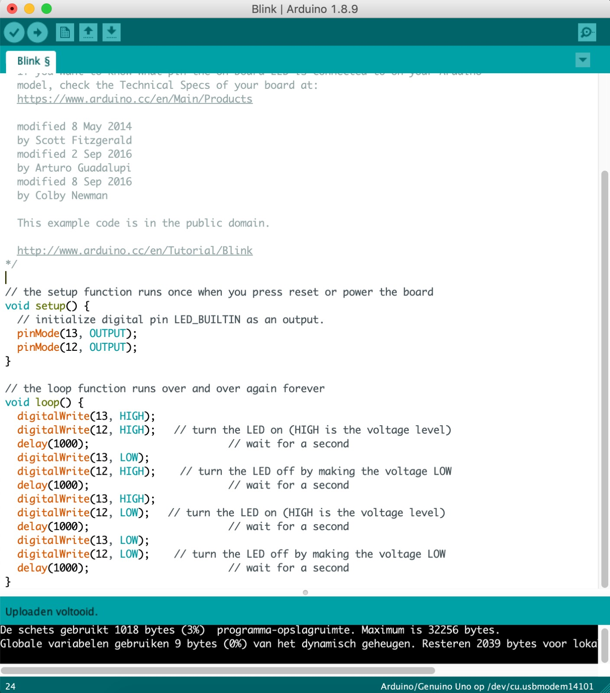
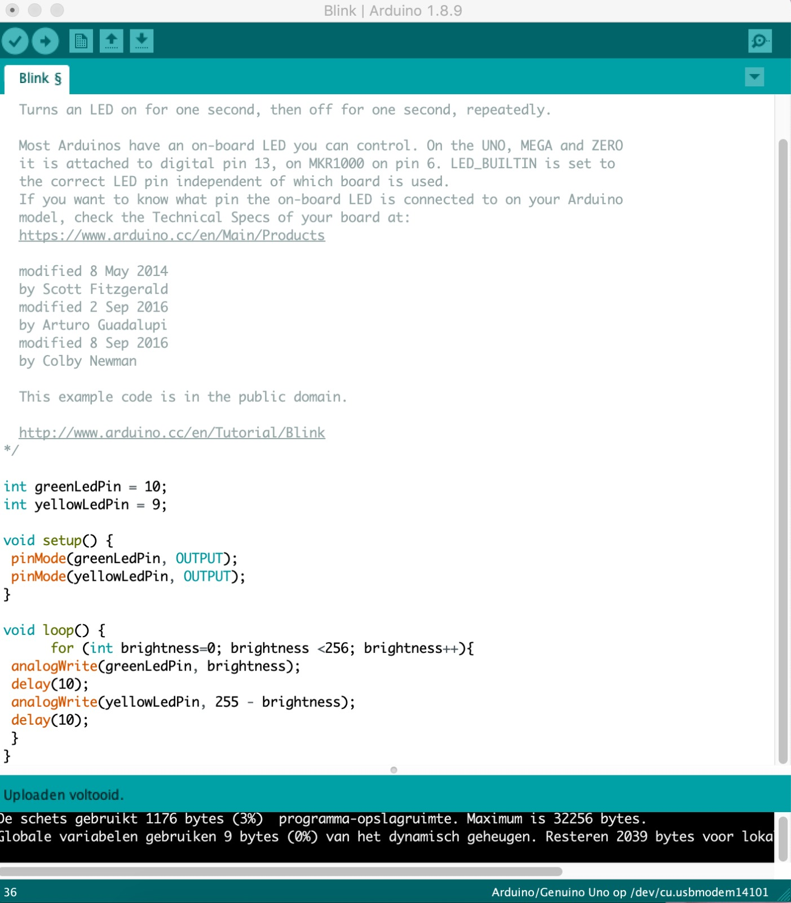
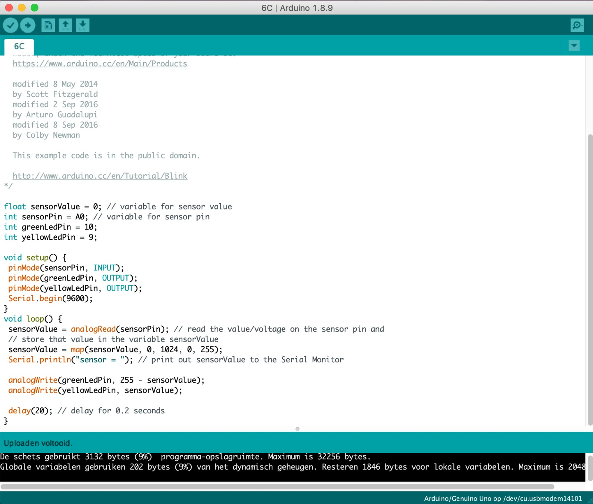
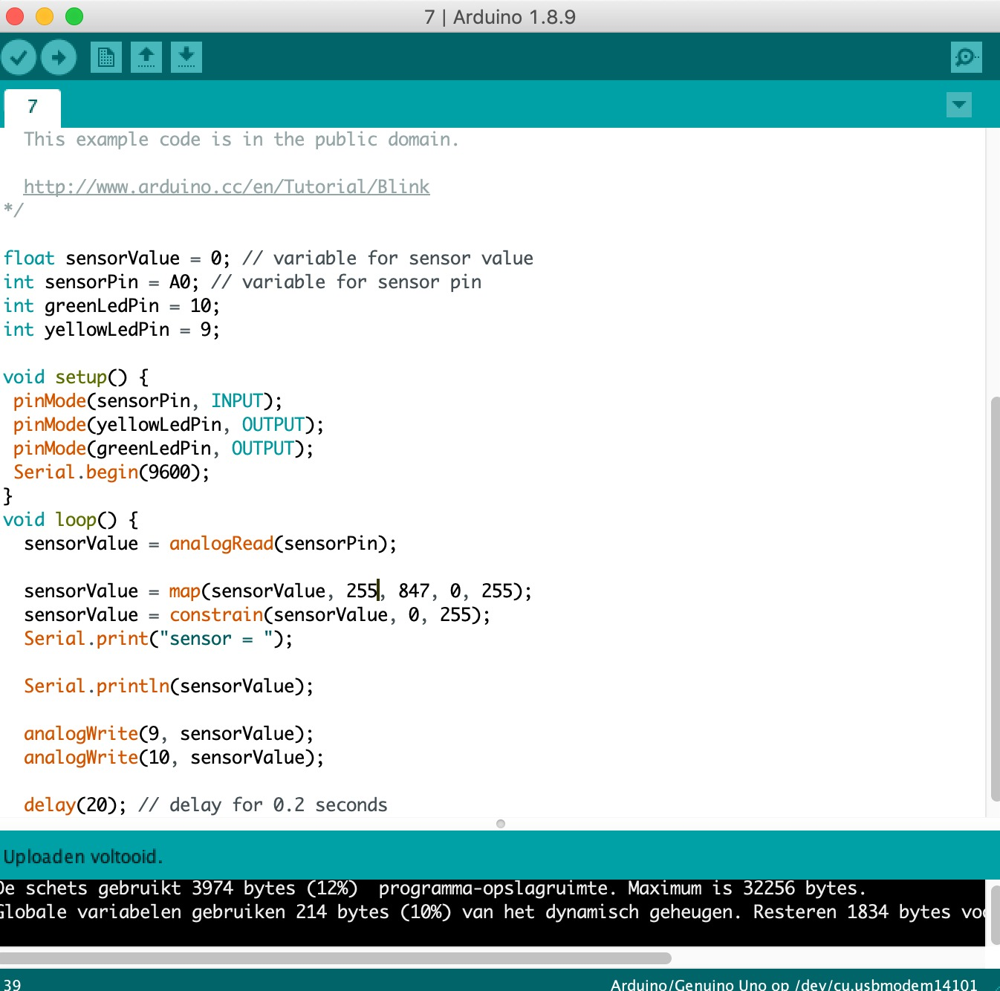
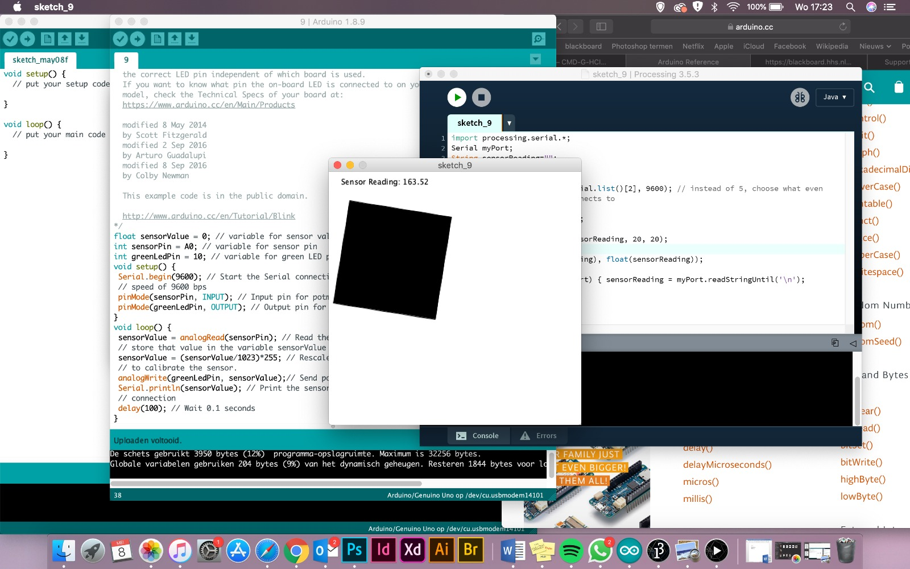
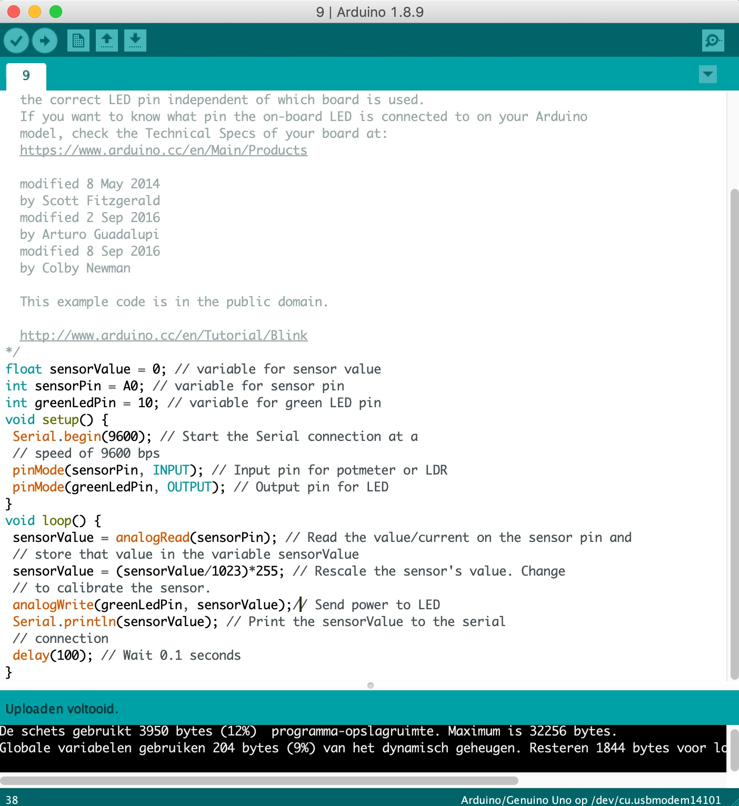
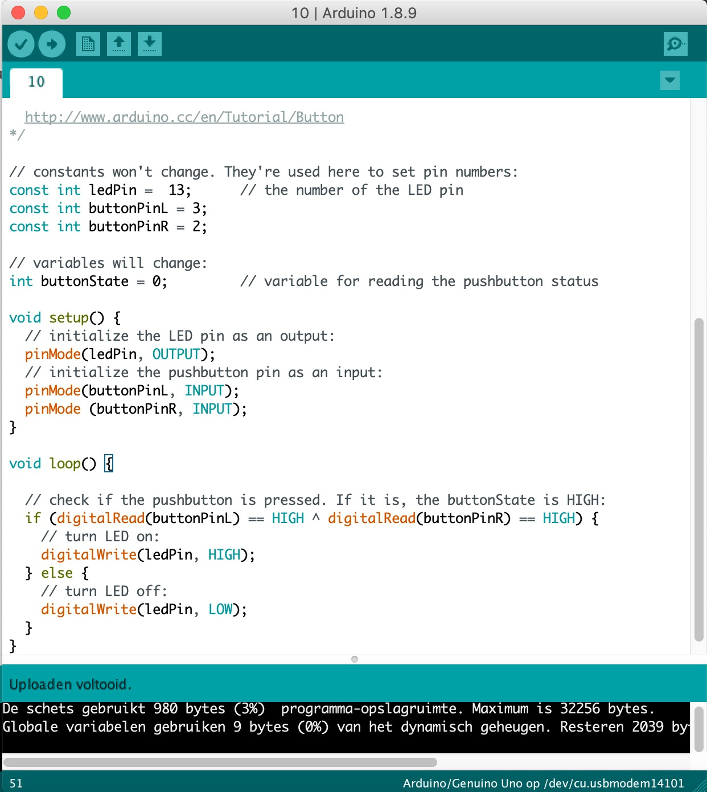
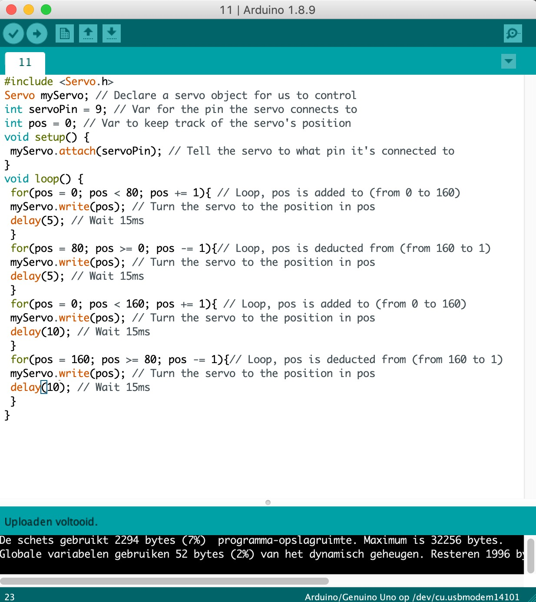
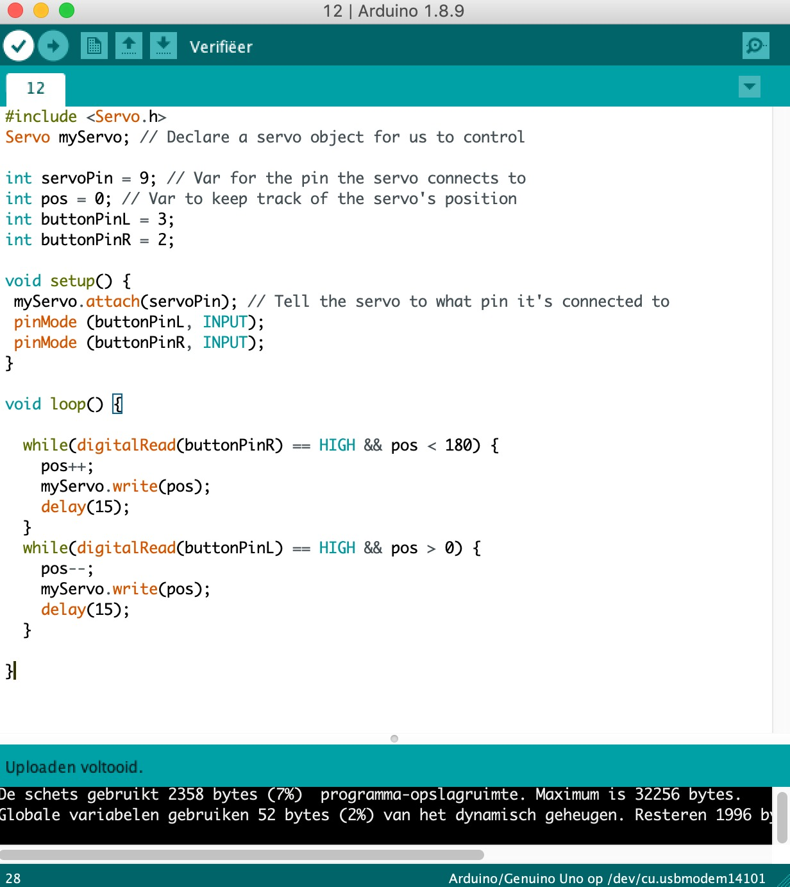
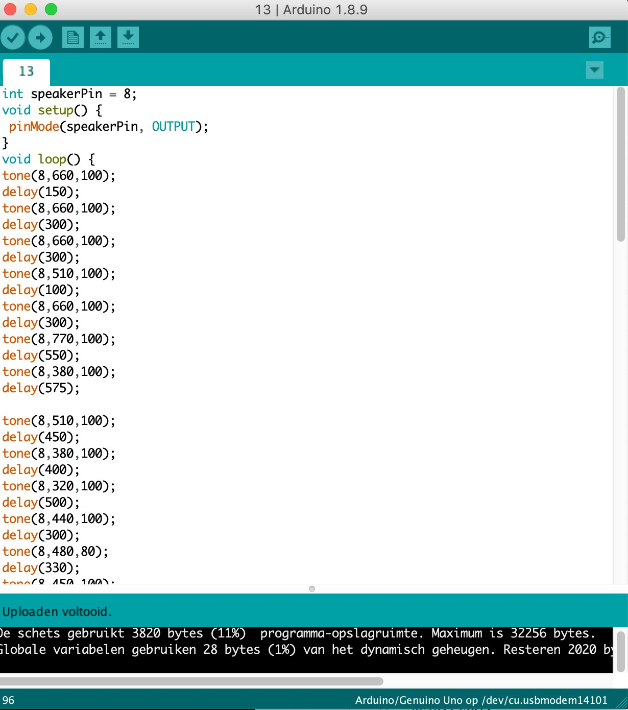

Arduino is een open-source elektronica-platform dat wordt gebruikt voor het bouwen van prototypes. Arduino gebruik is flexibele hard en software. Het is bedoeld om interactieve objecten of omgevingen te creëren. Ideaal voor artiesten en ontwerpers. Arduino kan werken zonder computer maar reageert ook op software zoals Processing.
Voor opdracht 3c hebben we het LED lampje aangesloten en uitgebreid met wat testjes. Voor de test is de Arduino pin 12 aangesloten met de pin. In de eerste test hebben we het groene en het gele lampje tegelijk laten knipperen. Vervolgens is de code zo aangepast dat groen en geel elkaar afwisselen en tot slot; voor opdracht 3c is de code zo gemaakt zodat het groene lampje twee keer zo snel knippert als het gele lampje.
In opdracht 4 is er gekeken hoe de helderheid van de LED lampjes aangepast kon worden. Via de analogWrite () functie is er de mogelijkheid om de helderheid van 0 (helemaal uit) tot 255 (helemaal aan) of ertussen in te stellen. Met opdracht 4C is de code zo geschreven zodat het ene LED lampje langzaam uitgaat en het andere lampje wat sneller.
In opdracht 6C moest het bordje er precies zo uitzien zoals op het voorbeeld plaatje en is de input van de potentiometer van oefening 5 gebruikt. Tijdens deze oefening heb ik geleerd om een analoge ingang en analoge uitgang te gebruiken. In opdracht 6C is de code zo gewijzigd zodat een LED vervaagt en het andere LED feller wordt.
In opdracht 7 hebben we de LED met een andere sensor beheert. De sensor die is gebruikt is de LDR sensor die opgaat over de gevoeligheid van de hoeveelheid licht die er is. voor opdracht 7 is de seriële monitor geopend, deze toont hoeveel licht er is. We hebben de hoogste en laagste waarde gemeten via de monitor. Dit hebben we gedaan door onze vinger op de sensor te leggen en deze er weer af te halen. De Led vervaagt door het hoeveelheid licht er op de sensor staat.
Voor opdracht 8 heb ik deze waardes gemeten die in de afbeelding zichtbaar zijn.
Voor deze opdracht heb ik het Arduino-bord laten verbinden met het Processing programma. Ik heb de code gebruikt die in het voorbeeld stond en vervolgens zag ik een cirkel in het beeld verschijnen. Ik heb een aantal wijzigingen in de code aangebracht waardoor er een vierkant ontstaat die moest roteren door middel van de sensor van arduino waar mijn hand overheen ging.
 In opdracht 10 is te zien dat Arduino ook door middel van knoppen kan functioneren. Ik heb de stappen gevolgd die in de handleiding staan en de voorbeeldcode. Na opdracht C heb ik de tweede knop op mijn bord toegevoegd en heb ik verschillende variaties geprobeerd. De LED werkte als ik op beide knoppen drukten en wanneer ik op 1 knop drukte. In Opdracht 10F was het de bedoeling dat de LED ging branden wanneer 1 knop van de twee werd ingedrukt.
In opdracht 11 heb ik de Servomotoren gebruikt. Deze draaien en kunnen voor veel doeleinden worden gebruikt, bv voor remote van gecontroleerde voertuigen of voor beveiliging camera’s om te focussen op een specifiek beeld. De servo heb ik aangesloten op het bord zoals aangegeven werd in de handleiding. In opdracht 11F heb ik de code zo gemaakt dat de servo op een interessante manier beweegt.
In opdracht 12B gebruiken ik de buttons om de servomotor te laten draaien. De motors draaien door de buttons die een andere richting bepalen. Als je de ene knop indrukt draait deze in de richting van de klok en andersom.
Voor opdracht 13B heb ik een luidspreker toegevoegd op het Arduino-bord. De luidspreker heb ik als eerst getest met de code die in de handleiding stond. Vervolgens heb ik het Mario liedje opgezocht en deze in de code gezet en gekeken naar de freqenties die in de diagram staan.
